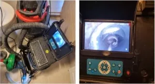

싱크대 배수구가 자꾸 막힐 때, 원인부터 확인하세요 (예시)
예시 글입니다 — posts/sink-drain-keeps-clogging.md 를 실제 내용으로 바꿔 주세요

한 번 뚫었는데 또 막히는 이유
싱크대 물을 조금씩 쓰면 괜찮은데 며칠 뒤 다시 느려지는 경우가 많습니다. 현장에서 가장 흔한 원인은 두 가지입니다.
- 오래 쌓인 기름덩어리가 배관 안쪽 벽에 눌어붙어 있는 경우
- 배관 기울기(구배)가 맞지 않아 물이 고이는 경우
현장에서 확인하는 순서
1. 배수구 트랩과 연결 호스 상태 확인
2. 내시경 카메라로 배관 내부 확인
3. 막힌 위치와 원인 파악 후 고압 세척 또는 제거
원인을 보지 않고 뚫기만 하면 재발하기 쉽습니다.
예방 습관
- 기름기 있는 음식물은 키친타월로 닦아낸 뒤 버리기
- 뜨거운 물을 흘려 주기적으로 배관 씻기
- 이상 징후(냄새, 물 빠짐 느려짐)가 있으면 일찍 점검받기
급하신 경우 고객센터 1661-6179로 연락 주세요.